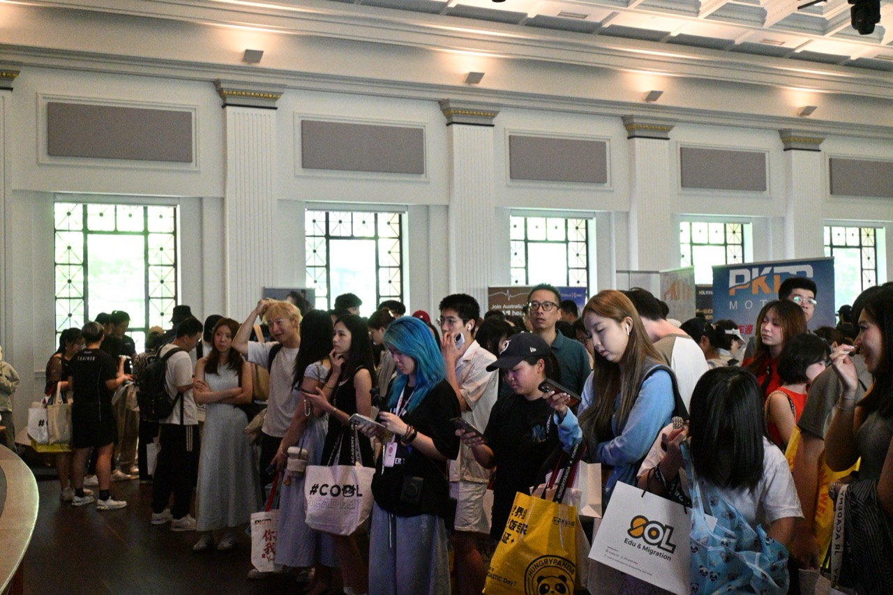
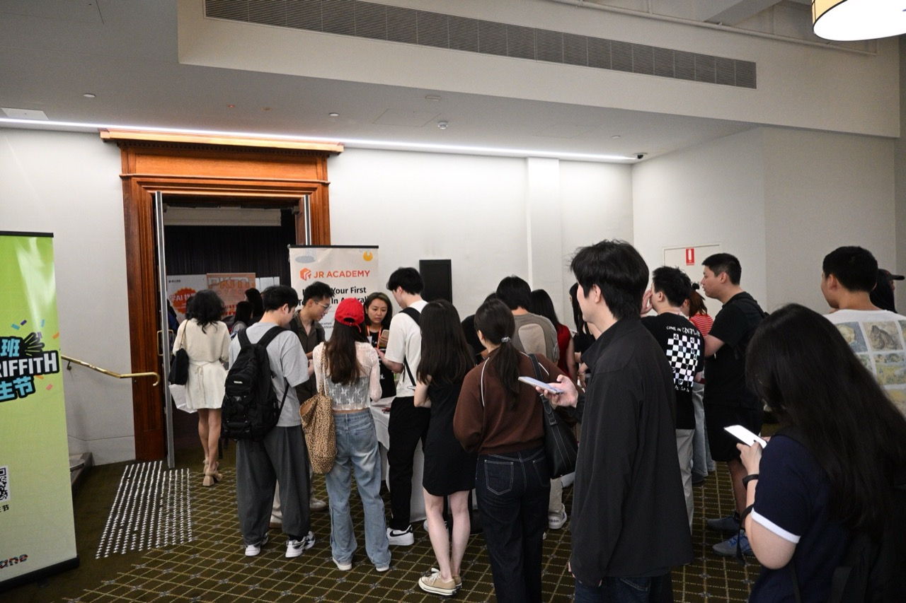

悉尼新生节
品牌合作邀请
9 月 26 日 · Sydney Town Hall · 诚邀品牌共同参与的合作方案
位于 CBD 核心场地，是开学季与学生建立第一印象的理想选择，我们愿与您一起把握。
悉尼新生节聚焦 四校新生、CBD 地标场地 和 现场互动转化。它既是一场迎新活动，也是品牌面向大学生人群的一次线下首秀。
预期到场新生
悉尼核心高校
展位 + 礼包 + 互动
新生强需求
刚到悉尼的新生对餐饮、出行、通讯、租房、金融、生活服务都有即时需求。
时间窗口好
在开学季前后触达，品牌更容易在用户心里占到“第一选择”的位置。
现场转化强
扫码、领礼、咨询、加群、二次触达可以在同一场景内连续发生。
招商表达清晰
既有流量曝光，也有线索沉淀和复盘，方便品牌评估投入产出。
活动面向 USYD、UNSW、UTS、Macquarie 四校新生，覆盖悉尼主流华人留学生圈层，适合需要在新学期建立品牌认知的商家。
综合型高校，生活服务、金融、通讯、餐饮接受度高。
理工与商科学生集中，适合职业、教育、科技类合作。
市中心通达优势明显，现场到场意愿与活动参与度高。
覆盖北区学生群体，让悉尼活动不止停留在内城单点。
地点：Sydney Town Hall
日期：9 月 26 日
定位：专业、正式、交通友好、适合招商展示
城市地标感
比普通校园摊位更有“活动主场”气质，适合品牌做正式亮相与内容拍摄。
交通动线好
Town Hall 站与 George St 核心商圈加持，到场门槛低，方便学生集中到场。
室内环境稳定
不受天气影响，品牌展位、礼品展示和现场互动体验更完整。
招商表达更专业
场地本身就提升品牌感，适合金融、教育、生活方式和服务类商家参与。


地址
Sydney Town Hall
483 George St, Sydney NSW 2000
日期 & 时间
2026 年 9 月 26 日（周六）
14:00 – 17:00
交通
Town Hall 火车站步行约 1 分钟，紧邻 George St 核心商圈，公交与轻轨可达。
场地
Lower Town Hall 室内空间，专业正式、动线清晰，可容纳大型展位与舞台活动。

免费礼品包
新生到场就能感受到“值得来”，礼品包是最直接的进场驱动力。
互动任务
集章、抽奖券、展位任务让学生不是匆匆路过，而是主动走完整个现场。
生活信息
将悉尼生活、学习、求职、城市资源整合到活动中，活动价值感更强。
认识同学
新生愿意为社交和融入感到场，这能自然放大活动的留存时间与分享意愿。
第一波用户心智
新生刚进入城市阶段，品牌更容易被记住，也更容易建立首次尝试。
面对面线索沉淀
展位交流、扫码进群、优惠券和礼品领取让线索不是“看过”，而是可继续跟进。
内容可二次放大
现场照片、短视频、学生 UGC 和主办方回顾内容，能把线下触点继续延长到线上。
公众号 / 小红书 / 社群 / 私域通知
展位触达 / 扫码 / 礼包 / 游戏任务
社群承接 / 优惠激活 / CRM 跟进
餐饮 & 生活方式
餐厅、奶茶、外卖、零售与本地生活服务，直接对接新生的高频消费需求。
金融 & 通讯
银行、支付、保险、电话卡、网络套餐，是新生落地后最先要办的一批服务。
教育 & 求职
课程、语言、留学移民、实习求职机构，与升学和职业规划场景天然契合。
租房 & 出行
公寓、租房平台、家具、二手车与出行服务，覆盖新生安顿期的刚需。
要曝光量的品牌
想在开学季快速建立认知、抢占“第一选择”心智的品牌，适合选中高档位做强露出。
要线索的品牌
希望拿到可跟进微信 / 社群 / 注册线索的品牌，可搭配扫码任务与群内承接放大转化。
课代表系列 · 大学生私域
长期运营澳洲高校内容和线下活动，对新生流量组织、到场动员和现场执行更熟。
混沌学园 · 企业家高净值社群
面向企业家办学，很多正是留学生背后的家长与家庭消费决策者，帮品牌对上有购买实力的人。
现场的关键不是把品牌摆出来，而是让学生有理由一站一站逛下去。抽奖券和任务机制，会把人流、互动和扫码行为自然串起来。
签到
领取基础抽奖券和活动地图。
逛展位
完成品牌互动任务，换取更多抽奖券。
社交分享
朋友圈 / 小红书 / 合照分享提升内容扩散。
抽奖与留资
把高参与人群沉淀为可复访线索。
签到基础券
到场先拿 1 张券，现场签到直接进入抽奖池。
组队奖励
3 人队每人 2 张，5 人队每人 3 张，带动同学结伴报名。
集章打卡
每扫一个商家展位给 1 张券，默认最多 8 个展位。
社交任务
小红书、朋友圈、Instagram 截图审核，通过后加券。
为什么对商家有效
每个互动都回到同一个奖励单位——抽奖券。学生为了多拿券，会主动组队、逛摊、扫码、发内容，商家因此拿到更均匀的人流和可跟进线索。
活动后可复盘
按报名、签到、扫码、社交任务、中奖记录与商家线索做数据反馈，赞助曝光不只停留在“摆摊露出”。
适合首次参展，建立基础曝光与到场互动。
推荐档，平衡曝光、现场资源与预热支持。
适合需要优先展位与更强品牌存在感的合作方。
悉尼专属高端档，适合追求定制化和行业排他价值的品牌。
活动独家赞助，最高曝光与全程露出，行业唯一合作方。
基础共性
五档均以悉尼新生节现场展位为核心，叠加不同强度的线上预热、现场资源和后续反馈支持。
推荐策略
如果希望兼顾到场触达和后续内容扩散，Gold 最适合大多数招商场景；Premium 适合需要做强认知和类独家合作的品牌。
| 权益维度 | Silver | Gold | Diamond | Premium | Title |
|---|---|---|---|---|---|
| 现场展位 | 标准展位 | 优先区域 | 高曝光区 | 定制展示 | C 位主展位 |
| 活动前预热 | 基础提及 | 重点推荐 | 多轮种草 | 联合企划 | 顶级预热 |
| 线上内容露出 | 基础露出 | 专题级内容 | 多渠道强化 | 深度定制 | 全程品牌露出 |
| 主持人口播 / 现场鸣谢 | 有 | 强化 | 重点口播 | 联合呈现 | 独家口播 · 开场致辞 |
| 互动玩法嵌入 | 基础任务 | 优先嵌入 | 深度互动 | 定制机制 | 专属定制环节 |
| 行业排他 | 无 | 可谈 | 优先 | 可配置 | 全场唯一 |
| 活动后反馈 | 基础复盘 | 详细反馈 | 深度反馈 | 专项总结 | 专属复盘 + 定制报告 |
| 对比维度 | 悉尼新生节 | 大学 O-Week 单校 | 普通地推 / 派单 |
|---|---|---|---|
| 覆盖学校 | 四校集中触达 | 单一学校 | 随机路人 |
| 到场人群 | 1500+ 精准新生 | 约 500 人 | 不定 · 不精准 |
| 入门成本 | $1,110 起 | 约 $3,220 / 天 | 人力成本另计 |
| 执行团队 | 主办方全包 | 需自带地推 | 需自组团队 |
| 现场氛围 | 室内地标主场 | 校园摊位 | 街头 / 校门口 |
| 线索沉淀 | 扫码 · 加群 · 数据反馈 | 较有限 | 较弱 |
选档 & 确认
沟通品牌目标，选定合作档位与所需权益，确认展位与现场需求。
物料 & 预热
提交 Logo、物料与礼品，进入活动前线上预热与内容排期。
现场执行
展位布置、主持口播、扫码任务与抽奖互动，工作人员全程引导动线。
数据反馈
活动后提供到场、扫码、线索与互动数据反馈，便于评估投入产出。
建议尽早锁定
优质展位与冠名类权益数量有限，越早确认越能拿到理想位置与更充分的预热周期。
可定制
主题冠名、专属互动环节、定制礼品与内容合作都可按品牌需求组合。
往期活动精彩回顾
用往期的真实数据与反馈，说明这类现场为什么值得品牌投入。

“活动组织成熟，学生愿意停下来交流，和普通派单完全不是一种触达深度。”
往期合作方反馈“礼品和任务机制把流量真正带进了展位，后续也更容易做社群承接。”
往期合作方反馈以上为匠人学院新生节往期综合活动口径，用于说明活动模型与招商逻辑。
互动密度高
展位多种互动游戏，参与率约 90%；转盘、集章、抽奖把流量真正带进展位，学生停留时间明显更长。
一对一答疑
学长学姐与移民规划老师现场解答课程、学习、职业与移民规划，志愿者团队全程支持签到、引导与后勤。

专业，但不呆板
热闹，也有秩序
这也是悉尼招商版最重要的气质: 让品牌相信这是一场值得投入的活动，让学生觉得这是一场愿意参与的活动。






课代表媒体矩阵
现场之外，您还可以借助「课代表系列」四城八校的内容矩阵与私域，把开学季的曝光温和地延续到线上。
「课代表系列」在悉尼大学、UNSW、UTS、墨大、Monash、RMIT、UQ、阿德莱德均设代表性账号，持续输出大学生活、教育资讯、本地活动内容，是精准接触年轻消费群体的天然入口。
四城 · 八所顶级高校
公众号矩阵粉丝
高粘性私域社群用户
每校均有代表性账号，围绕大学生活、教育资讯与本地活动持续更新，帮助您的品牌以专业内容自然融入学生日常。
课代表系列 · 小红书「课代表系列」自 2017 年创建，运营已 7 年+，是匠人学院长期沉淀的高校内容资产。
| 指标 | 课代表系列小红书矩阵 |
|---|---|
| 账号数量 | 8 个 |
| 矩阵粉丝 | 5 万+ |
| 累计点赞 | 50 万+ |
| 累计收藏 | 22,000+ |
| 活跃社群 | 1,500+ |
| 公众号 | 粉丝 |
|---|---|
| UQ 课代表（昆士兰大学） | 14,000+ |
| 墨大课代表（墨尔本大学） | 8,200+ |
| USYD 课代表（悉尼大学） | 6,200+ |
| UNSW 课代表（新南威尔士大学） | 6,000+ |
| 阿德课代表（阿德莱德大学） | 3,200+ |
| Monash 课代表（莫纳什大学） | 2,900+ |
不只做一次露出
现场加群、内容沉淀、群内二次触达串联，把活动当天的注意力延续成可反复触达的私域资产。
可跟进的线索池
群内接龙、活动预告、优惠推送与问卷回收，让品牌在活动后继续与学生保持连接。
往期活动成果背书
九年高校活动经验、官方迎新周合作与品牌定制活动，是我们敢与您郑重承诺的底气。
Orientation Week 官方合作
每年 2 月与 7 月与各高校官方合作，在新生周提供展位：Banner/海报、校园分发传单、优惠券与礼品发放、扫码加学生 / 建新生群。
单所大学单日人流量超 1 万+。
大学社团联动
迎新周是建立学生早期品牌好感度的绝佳窗口；通过与各高校社团合作，借社团特色活动精准触达目标学生，借助校园内部网络增强品牌存在感。
品牌活动合作
礼物 / 优惠券发放 · 赞助商视频展示 · 内容互动问答 · 主持发言 · 加微信 · 指定平台 / APP 下载注册。
定制化能力
主题活动 · 场地布置 · 物料礼品设计 · 活动冠名 · 现场展位 · Banner · 传单，按品牌需求组合。
九年累计举办活动场次
单场平均参与人数
基于「课代表」系列的高校内容矩阵、九年线下活动经验与学生私域，本届悉尼场可在开学季集中覆盖四校新生。合作不止线上曝光，还能通过展位互动、主持人口播、群内沉淀与活动后数据反馈，把现场注意力转成可继续跟进的线索。
让品牌在
开学第一波被看见
适合餐饮、通讯、银行、教育、租房、生活方式、求职服务等需要在新生节点建立认知与留资的品牌。